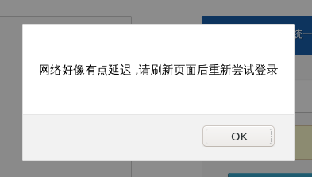

Linux平台上连接复旦校园网以及故障修复指南
1 前言
从来到复旦校园的第一天开始校园网在Linux平台的连接失败问题就一直存在着， 能不能成功连接纯粹靠运气，在比较重要的场合因为无法连接到校园网而耽误时间 甚至社会性死亡的情况频有发生。 经过询问几个同样使用Linux的朋友发现这个问题可以说是普遍存在。
具体情况为下图： 
在连接到校园网的无线AP后，浏览器会提示此网络需要登录，并打开登录页面。 在输入用户名与密码过后，有一部分几率会弹出所示窗口，提示认证失败。 而且在大部分情况下断开并重新连接网络或者刷新页面都无法解决当前问题。
在上学期（指2020年秋季）信息办下发的问卷当中我也反映了这一问题， 而且也留下了自己的邮箱并表示如果可以自己希望参与调试与修复过程。 但是直到现在我也没有接到任何消息，而且在这个过程中通过不断的尝试和折腾， 自己也摸索出来了一套可以正常工作的连接方法。
但是具体的机制因为无法白盒测试所以暂不清晰，所以在以下的操作中会有一些十分鲁棒的行为。 在有机会参与白盒测试的情况下我或许会研究出来更简单而且优雅的方法(虽然那时候可能也不需要这么做了）， 而且我也实在是没有精力去黑盒测试这种系统，我的需求是需要连接的时候可以正常连接上， 这样就可以继续自己原来的工作流。
2 设备信息
OS: Arch Linux
Kernel: 5.11.1
Shell: zsh
WM: i3
NW: NetworkManager
不同发行版与不同配置之间具体的操作与命令可能会有差别，我会解释每一个步骤中命令的具体含义。 如果在你的发行版上找不到具体的文件或者命令，请参阅该发行版的Wiki以及社区论坛。
3 The Hacky Trick
Step 1
打开终端（废话），准备好输入以下命令。
Step 2
删除DNS客户机的配置文件，里面包含DNS服务器的IP地址以及本地域名。
在Arch中这个文件是 /etc/resolv.conf.
删除这个文件需要root权限。
sudo rm /etc/resolv.conf
Step 3
将 /run/resolvconf/ 中的DNS配置文件 resolv.conf 复制到 /etc 中。
当然创建一个软链接是最好的。
这一步也需要root权限
sudo ln -s /run/resolvconf/resolv.conf /etc/resolv.conf
在这里我也没搞懂这两步的意义，删除一个文件然后又建立一个软链接。理论上来说这两个文件内容是同样的。 但是在某些时候不这样做也会导致连接失败，或许以后会研究清楚这个问题。
Step 4
运行 resolvconf ，从当前的DNS服务器获取更新。
sudo resolvconf -u
Step 5
重启你的网络管理工具，我使用的是 NetworkManager 。
sudo systemctl restart NetworkManager
Step 6
启动或者重启 DHCP client 。
sudo dhcpcd
如果你是用的是IPv6网络请使用 dhclient 。